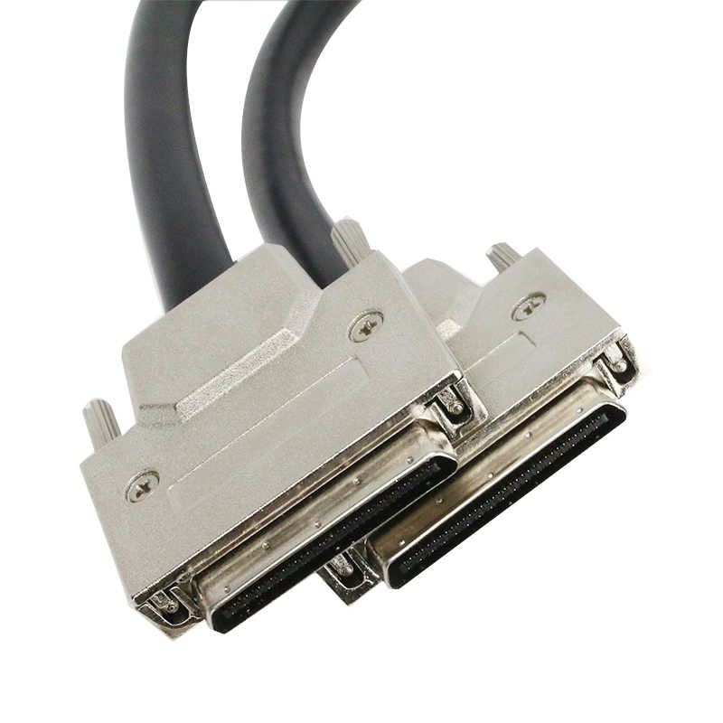

SCSI

SCSI:
SCSI (SCASI) è l'acronimo di Small Computer System Interface, in informatica significa un'interfaccia standard creata per il trasferimento di dati a bus in modalità parallela.
Questa interfaccia è stata progettata nel 1978, è stata commercializzata dal 1986 con l'ingresso sul mercato del Macintosh Plus da parte della nota azienda Apple.
L'interfaccia SCSI viene per lo più usata per la scambio di dati con hard disk e unità nastro di memorizzazione di massa, ma anche per connettere una vasta gamma di dispositivi
come per esempio scanner, lettori e scrittori di CD e lettori DVD. Lo standard SCSI è stato creato con l'idea di favorire la compatibilità tra i dispositivi.
In passato l'interfaccia SCSI era molto diffusa in ogni tipologia di computer, mentre attualmente trova un vasto impiego solamente in workstation, server e periferiche di fascia alta.
Questo perchè attualmente i PC Laptop, Notebook, o Desktop hanno ormai altre porte standard che fanno la stessa cosa, come l'USB (Universal Serial Bus) quest'ultima risulta
più performante e più facilmente utilizzabile rispetto alla SCSI perciò non viene più utilizzata su questi tipi di dispositivi.
Esistono diversi tipi di SCSI:
SCSI-1:
SCSI-1 dispone di un bus a 8 bit, con controllo di parità, funzionante in modo asincrono alla velocità di 3,5 MB/s, oppure in modo sincrono a 5 MB/s, con una lunghezza massima consentita dei cavi di collegamento pari a 6 metri. Questa è la versione originale di SCSI ed è stata lanciata nel 1986.
SCSI-2:
Questa versione è stata lanciata nel 1989, in seguito vennero prodotte due varianti del SCSI-2 la versione Fast-SCSI e Wide-SCSI. Il Fast-SCSI ha consentito di elevare la massima velocità di trasferimento dei dati (Transfer rate) fino ad un massimo di 10 MB/s, mentre il Wide-SCSI ha raddoppiato sia larghezza del bus, portandola a 16 bit, sia la velocità, portandola a 20 MB/s. Tuttavia queste maggiori prestazioni hanno comportato una limitazione a 3 metri della lunghezza massima dei cavi di collegamento.
SCSI-3:
SCSI-3 noto anche come Ultra-SCSI e Fast-20-SCSI fu lanciato nel 1992. La velocità del bus era raddoppiata a 20 MB/s per i sistemi a 8-bit e a 40 MB/s per i sistemi a 16-bit. La massima lunghezza dei cavi rimase 3 metri, ma l'Ultra-SCSI si guadagnò una pessima reputazione per la sua estrema sensibilità alla lunghezza e alle condizioni dei cavi di collegamento, che spesso provocavano malfunzionamenti a causa di piccoli difetti nei connettori o nei terminatori.
Esistono molti altri tipi di SCSI come per esempio alcuni SCSI con il termine Ultra e altri di vario tipo.
Home Page